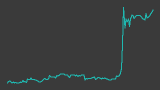

アクシスコンサルティング（9344）
東証グロース／レポート更新 2026-09-04
記述の裏取り 33/57件が裏付けあり／24件は未確認・要修正（検証 2026-08-31）
IR情報 ↗株探 ↗

画像判定※・6か月・基準日 2026-09-03一行でいうと：コンサルタントなどのハイエンド人材に特化して、人材紹介（AXIS Agent）とフリーコンサルの月次稼働（AXIS Solutions）を同じ人材データベースの上で回す会社。2026年6月期は売上高82.9億円✓・営業利益4.92億円✓で会社計画を上回り、2027年6月期は営業利益8.0億円✓の計画を出した。ただし時価総額は約66億円※・20日平均売買代金は2,902万円※で、台帳の機械判定は流動性ゲートの手前（「流動性低」）で止まっている。
週次アップデート最新 2026-W36・全 2 件
新しい週を上に置いている。過去の記述は書き換えず、そのまま残している。
2026-W36（続報）
株価は横ばい。業務提携・アワード受賞の開示が重なった週
- 株価: 週間 +0.0%（1320→1320円・採用終値ベース、照合成立 4日、週内 1302〜1320円）
- 出来高: 前週比 -3.2%（今週 88,300株／前週 91,200株）※／信用倍率: 算出不可（RATIO_NA）・買残 174.4千株（08/28時点）※
- 判定: 「調査」／開示: なし
- ニュース: 09/01 AI Librarium 株式会社とのFDE人材育成に関する業務提携のお知らせ 株探 ↗
- ニュース: 09/03 「EY Strategy and Consulting FY26 Recruitment Agency Awards」にて2部門で「Most Successful Placement Agency」を受賞 株探 ↗
（解釈）9/1付でAI Librarium株式会社とのFDE人材育成に関する業務提携、9/3付でEYのリクルーティングエージェンシーアワード受賞が発表された 株価への反応は限定的だった
次週に見ること: ① 業務提携の詳細開示・進捗を確認する
2026-W36（2026-08-31 週）
（台帳に載せた最初の週。2026年6月期の決算が8/14に出た直後で、株価は決算前より3割高い場所にいる。）
- 入口はスクリーニング。楽天証券「成長株0830（per）」2026-08-30 19:15 取得の通過10件のうち1件として
data/master.yamlに登録された（watch_since: 2026-08-30）。 - 2026-08-14 に2026年6月期の決算短信（連結）と通期決算説明資料が開示された。売上高8,289百万円✓・営業利益492百万円✓で、会社は「期初計画および第3四半期決算発表時に公表した修正計画を上回って着地」と説明している（決算説明資料 p.5／ssl4.eir-parts.net ↗・取得日 2026-08-31）。
- 同時に出た2027年6月期の会社計画は売上高9,600百万円✓・営業利益800百万円✓（決算短信 p.2／ssl4.eir-parts.net ↗・取得日 2026-08-31）。会社は中期経営計画で置いていた27/6期の目標（売上高9,060百万円※・営業利益750百万円※）を上回る計画に設定したと説明している（決算説明資料 p.7・p.28）。
- 株価は開示の翌営業日に動いた。2026-08-14 の採用終値は989円✓、週明け2026-08-17 は始値・高値・安値・終値がすべて1,139円※（終値1,139円✓／前日比+150円）、翌2026-08-18 は出来高210,100株※（8/14の5,900株※の約36倍）を伴って終値1,369円✓と直近52週の高値をつけた。8/17 は値幅制限の上限に張り付いた（ストップ高）と読めるが、板情報は確認していないので断定しない。
- 直近の採用終値は2026-08-27 の1,321円✓で、決算前の8/14終値から+33.6%（
data/prices/daily.csv）。 - 台帳の機械判定は「流動性低」。20日平均売買代金2,902万円※がゲートの3,000万円に届いていない（
src/judge.py・data/prices/daily.csv）。同じ期間の中央値は584万円※で、平均は決算直後の数日が持ち上げている。いま見えている流動性はイベントの副産物で、恒常的なものではない可能性が高いと読める。 - 信用買い残は2026-08-14 の102.5千株※から2026-08-21 の155.5千株※へ増えた。売り残は0株※のままで信用倍率は定義できない（
data/margin/9344.csv）。
次週に見ること：①決算後の出来高が萎むかどうか（萎めば20日平均売買代金はゲートを大きく割り込む） ②8/18の決算説明会の質疑応答が開示されるか（会社は後日開示する方針と書いている） ③9/28提出予定の有価証券報告書と9/29の定時株主総会
次期売上・利益推定対象 FY2027-06・作成済み・変数 3 個
作成済み 対象期 FY2027-06・起案 2026-09-05。検証済みデータと明示した仮定から機械計算した概算であり、会社計画でも的中予想でもない。推定 の付いた変数を疑うための頁。
会社計画・市場予想・実績との比較（百万円）
| 指標 | 前期実績 | 会社計画 | 市場予想 | 当台帳推定 | 市場予想比 |
|---|---|---|---|---|---|
| 売上 | 8,289 | 9,600 | — | 9,905 | — |
| 営業利益 | 492 | 800 | — | 891 | — |
市場予想: アナリストカバー無し。みんかぶの証券アナリスト予想ページ（https://minkabu.jp/stock/9344/analyst_consensus、2026-09-05取得）に コンセンサス予想の表が存在しない。比較対象は会社計画のみ
計算の分解
| セグメント | 式（値を代入） | 売上（百万円） |
|---|---|---|
| 通期（直近四半期の売上×年率換算） | 2,830 × 3.5 = 9,905 | 9,905 |
変数と根拠
カードを押すと、その値の置き方（メモ・出典）が開く。推定 の変数から疑うこと。
通期（直近四半期の売上×年率換算）q4_revenue2830実績
data/fundamentals/9344.csv通期（直近四半期の売上×年率換算）annualize3.5推定
全社op_margin0.09推定
感度 — この推定を最も動かす変数
各変数を +10% したときの営業利益の変化。上にある変数ほど、根拠を厚く確かめる価値がある。ただし op_margin だけは別扱い——営業利益 = 売上合計 × op_margin なので +10% は定義上つねに +10% になり、売上側の変数と大小を比べても意味が無い。
| 変数 | セグメント | 営業利益への影響 |
|---|---|---|
op_margin | 全社 定義上 | +10.0% 乗法モデルなので定義上つねに +10%。売上側の変数との大小比較には意味が無い（率の水準そのものを疑うこと） |
annualize | 通期（直近四半期の売上×年率換算） | +10.0% |
q4_revenue | 通期（直近四半期の売上×年率換算） | +10.0% |
推定の変遷
過去の版は書き換えずに残す。数値感がどう変わってきたかが学習の履歴になる。
| 起案日 | 対象期 | 売上 | 営業利益 | 何を変えたか |
|---|---|---|---|---|
| 2026-09-05 | FY2027-06 | 9,905 | 891 | 初版（Claude 起案・人間未確認）。6月決算で新しい期の四半期実績がまだ1つも無いため、直近四半期（4Q）の売上×年率換算係数の1区分で置く。 会社の売上の分解（人材紹介＝平均年収×手数料率×入社決定人数、スキルシェア＝月額単価×稼働人数）は変数の開示が無く組めない。 2026年2月にサン・システムプランニングを連結しており、前期（FY2026-06）は上期と下期で会社の中身が違う。会社計画は売上高 9,600・ 営業利益 800 百万円（fundamentals の採用値。前期比 +15.8%・+62.6%）。推定は売上・営業利益とも会社計画をやや上回るが、 実績が1四半期も無い段階の数字で、11月の1Q決算で置き直す前提 |
会社概要この会社は何者か・財務の推移と健全性・今後の展望とリスク・値動きと市場の評価・出典・検証の記録
この会社は何者か
コンサルタントなどのハイエンド人材に特化した人材サービス会社。2002年4月設立、東証グロース上場。会計上のセグメントは「ヒューマンキャピタル事業」の1つだけで、実態は次の二本立てで動いている〔S1〕。
定性図（数値を含まない）
- AXIS Agent（人材紹介） — 正社員としての入社を決めて手数料を受け取る。会社自身が売上を「平均年収 × 平均手数料率 × 入社決定人数」と説明している〔S1〕。決まったときに一括で入るフロー型。祖業は大手コンサルティングファーム向けで、近年は事業会社向けを第二の柱として広げている。
- AXIS Solutions（スキルシェア） — フリーコンサルタントを月単位で稼働させる。売上は「1人当たり平均受注単価（月額）× 稼働人数」〔S1〕。毎月積み上がるストック寄りの形。
- 両者の土台が共通のスキルデータベースで、会社は規模を約11万人※としている〔S5〕。紹介で接点を持った人材が独立すればスキルシェア側に回り、その逆もある、という相互送客が会社の説明する強み〔S1〕。
2026年2月3日に株式会社サン・システムプランニング（SSP）の全株式を456百万円※で取得して連結子会社にした〔S1〕。SSPはサーバインフラを中心としたシステムの設計・開発・運用保守を長年続けてきた会社で、のれん247百万円※を8年で均等償却する〔S1〕。会社はこれを「上場後初のロールアップ型M&A」と呼び、人を紹介するだけでなく実装まで自前で担う体制づくりの一歩と位置づけている〔S2〕。これが初の連結決算のきっかけであり、後述する数字の断絶の理由でもある。
従業員は197名※（2026年6月末）〔S5〕。
財務の推移と健全性
出所: data/fundamentals/9344.csv の採用値（別サイト2つ以上が一致した値だけ）。6/6点を採用。
| 決算期 | 売上高（百万円） | 営業利益（百万円） | 経常利益（百万円） | 当期純利益（百万円） |
|---|---|---|---|---|
| 2023/6期 | 4,342 | 673 | 644 | 418 |
| 2024/6期 | 4,665 | 833 | 831 | 502 |
| 2025/6期 | 5,271 | 210 | 219 | 321 |
| 2026/6期 | 8,289 | 492 | 497 | 288 |
| 2027/6期（会社計画） | 9,600 | 800 | 780 | 500 |
（すべて data/fundamentals/9344.csv の採用値＝別サイト2つ以上が一致した値。2025/6期以前は単体、2026/6期以降は連結）
この表には断絶が1本入っている。 2026/6期から連結決算に変わったので、2025/6期以前と縦に比べられない。会社が「売上高57.3%増」と示している参考値〔S1〕も、連結の8,289百万円✓と単体の5,271百万円✓を並べたものである。単体どうしで比べると2026/6期の単体売上高は8,021百万円※・前期比52.2%※増、単体営業利益は521百万円※・同147.5%※増で〔S1〕、連結子会社を抜いても本体が5割伸びているというのがこの期の中身になる。SSPの寄与は6か月ぶんで267百万円※〔S2〕にとどまる。
利益は一度大きく落ちて戻った。営業利益は2024/6期833百万円✓から2025/6期210百万円✓へ約4分の1になり、2026/6期に492百万円✓へ戻している。会社の説明は、中期経営計画に基づく戦略投資（広告宣伝・人的資本・DX/IT、3年で約30億円※）を先に打ったことによる一時的な下押しで、2026/6期はその効果が出た、というもの〔S2〕。この説明が正しいかどうかは、投資が続く2027/6期以降の利益率で確かめられる。
期の中の動きはさらに極端だった。
出所: data/fundamentals/9344.csv の採用値（別サイト2つ以上が一致した値だけ）。4/4点を採用。
出所: data/fundamentals/9344.csv の採用値（別サイト2つ以上が一致した値だけ）。4/4点を採用。
1Q（2025年7〜9月）は営業損失255百万円✓、2Qで64百万円✓の黒字に戻り、3Q 329百万円✓・4Q 354百万円✓と積み上げて通期492百万円✓に着地している。売上も1,456百万円✓→1,698百万円✓→2,305百万円✓→2,830百万円✓と四半期ごとに増えた。通期の数字だけを見ると「そこそこの増益」に見えるが、実態は期の後半に寄った回復である。
| 決算期 | 営業利益率（%） | 自己資本比率（%） | 総資産（百万円） | 営業キャッシュフロー（百万円） | フリーキャッシュフロー（百万円） | 現金同等物（百万円） |
|---|---|---|---|---|---|---|
| 2024/6期 | – | 77.0 | 4,112 | 446 | 201 | 3,023 |
| 2025/6期 | 3.98 | 73.5 | 4,515 | -183 | -322 | 2,999 |
| 2026/6期 | 5.94 | 59.5 | 5,664 | 1,049 | 737 | 3,319 |
| 2027/6期（会社計画） | 8.33 | – | – | – | – | – |
（「–」は照合が成立していないか、会社計画に該当項目が無いもの。埋めていない）
- 自己資本比率は77.0%✓→73.5%✓→59.5%✓と下がった。 下がった主因は子会社取得でのれんと負債が連結に乗ったことである。有利子負債は317百万円※（単一ソースのため参考値）、うち長期借入金は100百万円※〔S1〕で、現金同等物3,319百万円✓に対して十分に小さい。借入で自己資本比率を落としたのではないと読める。
- キャッシュの出方は劇的に変わった。 2025/6期は営業CFが-183百万円✓・フリーCFが-322百万円✓と流出だったのが、2026/6期は営業CF 1,049百万円✓・フリーCF 737百万円✓に転じている。現金同等物は3,319百万円✓で、時価総額の半分に相当する。
- 配当は2026/6期35円※（配当性向60.4%※）、2027/6期予想41円※〔S1〕。方針は「DOE5%を下限とし、配当性向40%とのいずれか高い方」〔S1〕。利益が伸びなくても純資産に対する下限が効く形の還元設計になっている。
- 数値の注意点として、決算短信の1株当たり当期純利益は57.92円※だが、台帳の採用値は57.83円✓である。差は純利益を百万円単位に丸めてから期中平均株式数4,980,525株※で割ったかどうかの違いで、どちらかが誤りというわけではない。台帳は採用値のほうを正として扱う。
今後の展望とリスク
会社が置いた2027年6月期の計画は、売上高9,600百万円✓（+15.8%）・営業利益800百万円✓（+62.4%）・経常利益780百万円✓・当期純利益500百万円✓。サービス別の内訳は人材紹介4,760百万円※・スキルシェア4,300百万円※・SSP 540百万円※〔S2〕。増益の組み立ては、増収による売上総利益の増加（+1,009百万円※）が人件費・採用費の増加（-681百万円※）とその他販管費（-214百万円※）を吸収し、TVCM費用の反動減で広告宣伝費が減るぶん（+194百万円※）が上乗せされる、というもの〔S2〕。中期経営計画の最終年度である2028年6月期の目標は売上高11,290百万円※・営業利益1,400百万円※〔S2〕。
リスクは次の順で重いと読んでいる。
- 流動性が足りない。 20日平均売買代金2,902万円※はゲートの3,000万円をわずかに下回り、同期間の中央値は584万円※しかない。決算前の20営業日（2026-07-16〜08-14）で計算し直すと平均は約218万円※で、ゲートの1割にも届かない（
data/prices/daily.csvの採用終値×出来高で計算）。判定が正しくても建てられず降りられないという、この台帳がゲートを最上位に置いている理由がそのまま当てはまる。 - 需要の出どころが1本に寄っている。 主要顧客は大手コンサルティングファームの採用需要で、その需要が止まったときの振れ幅は既に実演済みである。2025/6期は人材紹介の四半期売上高が4四半期とも前年割れした〔S2〕。回復局面の数字だけを外挿すると、この振れ幅を見落とす。
- 26/6期4Qの伸びが極端で、そのまま続くとは限らない。 人材紹介の4Q売上高は1,527百万円※・前年同期比+99%※で、会社は「マネージャークラス以上の高単価案件が集中した」と説明している〔S2〕。集中したものは翌期に同じ形では現れにくい。会社自身が2027/6期の人材紹介を+12%※に置いているのは、そう見ているからだと読める。
- SSPの成長はほぼ織り込まれていない。 2027/6期のSSP計画540百万円※は、2026/6期に取り込んだ6か月ぶん267百万円※の年換算（534百万円）とほぼ同じである。つまり会社計画はSSPの実質的な伸びをゼロ近くで置いている。 保守的とも読めるし、買収した事業の成長シナリオをまだ描けていないとも読める。のれん247百万円※の8年償却は毎期およそ31百万円※の固定費として効き続ける。
- 成長投資と還元を同時に約束している。 M&Aを成長戦略の柱に掲げる一方で、DOE5%下限・配当性向40%の還元も置いた〔S1〕。2026/6期の配当性向は60.4%※で、利益が伸び悩んだ期には還元がキャッシュを削る側に回る。
- 台帳側の未確定。
data/master.yamlのvaluation_model/fiscal_year_end/ir_url/peersがTO_VERIFYのままである。評価手法が決まっていないので、このレポートでは割高・割安の判断は出さない。
値動きと市場の評価
出所: data/prices/daily.csv の採用終値（2つの取得元が一致した終値だけ）。ザラ場の高値・安値は照合を通っていないので使っていない。242/242点を採用、52週の採用終値 240営業日、出来事 2/2件を配置。
直近52週（2025-08-29〜2026-08-27）の採用終値は、安値808円✓（2025-09-03）から高値1,369円✓（2026-08-18）のあいだ。決算直前の2026-07-24〜08-14 の15営業日は920〜989円✓の帯でほとんど動いておらず、値がついたのは開示の翌営業日からである（data/prices/daily.csv）。
直近の採用終値1,321円✓（2026-08-27）を基準にした参考値（いずれも自分で計算したもので、照合済みの採用値ではない）:
| 指標 | 値 | 計算の元 |
|---|---|---|
| 時価総額 | 約65.7億円 | 1,321円✓ × 4,974,848株（期末発行済株式数から自己株式を除いた数。決算短信 p.13〔S1〕） |
| 予想PER | 約13.1倍 | 会社計画EPS 100.51円〔S1〕 |
| PBR | 約1.95倍 | 1株当たり純資産677.22円✓ |
| 予想配当利回り | 約3.1% | 会社予想の1株配当41円〔S1〕 |
テクニカル指標（src/judge.py が採用終値から計算。2026-08-27 時点。いずれも参考値）:
- 25日移動平均1,058.16円※に対する乖離は+24.8%※
- 週足の中期MAの傾きは+1.10%/週※、長期MAは+0.63%/週※で、どちらも上向き
- 一目均衡表では雲の上（雲の上限936.5円※）
- 3か月に対する出来高比は4.63倍※
- 信用倍率は定義できない（2026-08-21 時点で売り残0株※・買い残155.5千株※）。買い一辺倒なので過熱側として扱われる
機械判定は「流動性低」で①流動性ゲートに引っかかり、②トレンド以降は評価されていない。 トレンド・雲・乖離だけを見れば上向きだが、ゲートを通っていない以上その先の議論には進まない、というのがこの台帳の順序である。
アナリストによるカバレッジの有無は確認していない（未確認）。
出典
凡例: ✓=2ソース照合済みの採用値 ／ ※=未照合・参考値 ／ †=決算短信（一次情報）から直接
一次情報（会社・取引所の開示）
| 記号 | 資料 | 開示日 |
|---|---|---|
| S1 | 2026年6月期 決算短信〔日本基準〕（連結） | 2026-08-14 |
| S2 | 2026年6月期 通期決算説明資料 | 2026-08-14 |
| S3 | 2025年6月期 第3四半期 決算説明資料（中期経営計画の目標値の出どころ） | 2025-05-14 |
| S4 | 2026年6月期 第3四半期 決算説明資料 | 2026-05-14 |
| S5 | プレスリリース「2026年6月期通期業績は期初計画を大幅に上回って着地」（会社発信） | 2026-08-14 |
| S6 | IR情報（会社IRページ） | — |
（S1〜S6 の取得日はいずれも 2026-08-31）
二次情報（まとめサイト）
| 記号 | 資料 | 使いどころ |
|---|---|---|
| S7 | 株探 財務 | data/fundamentals/9344.csv の主ソース |
| S8 | IR BANK 業績 | 同・副ソース |
| S9 | 株探 基本情報 | 株価・信用残の取得元 |
台帳の中のデータ
data/prices/daily.csv（株価の採用終値・出来高）data/fundamentals/9344.csv（財務の採用値）data/margin/9344.csv（信用残）data/master.yaml（銘柄マスタ・流動性ゲートの閾値）src/judge.py（テクニカル指標と機械判定）
まだ確かめていないこと
- 2026-08-18 の機関投資家・アナリスト向け決算説明会の質疑応答。会社は後日開示する方針と書いているが〔S2〕、2026-08-31 時点で確認していない
- 2026-08-14 の開示が取引時間中だったか終了後だったかを確認していない。株価の動き方から終了後と読めるが、開示時刻そのものは見ていない
- 2026-08-17 がストップ高だったかどうか。四本値が同値であることからの推測で、板情報は確認していない
- アナリストのカバレッジの有無・目標株価
- 有価証券報告書（2026-09-28 提出予定〔S1〕）による株主構成・大株主・従業員の内訳
- SSPの買収前の単体業績の推移（売上・利益の水準と伸び）
data/master.yamlのvaluation_model/fiscal_year_end/ir_url/peersがTO_VERIFYのまま。この銘柄にどの評価手法を当てるかが決まっていない- 人材紹介の平均年収・平均手数料率・平均売上単価の実額。会社は「過去最高水準」と書いているが〔S1〕、数値は開示されていない
記述の裏取り
本文の記述を、書いたのとは別の文脈が出典URLを取り直して1件ずつ判定した結果（読み方）。
検証日 2026-08-31検証した記述 57裏付けあり 33この出典では確かめられない（別の出典が要る） 2確かめられない（到達不可・出典なし） 22再取得した出典 6
裏が取れなかった記述
出典を取り直しても確かめられなかったもの。本文に残っているが、確認済みとして読んではいけない。
| 判定 | 本文の記述 | 再取得して分かったこと | 出典 | どうするか |
|---|---|---|---|---|
| 確かめられない（到達不可・出典なし） | 楽天証券「成長株0830（per）」2026-08-30 19:15 取得の通過10件のうち1件として data/master.yaml に登録された | SKILL.md §隔離により data/master.yaml を開かない。スクリーニング結果の原本もリポジトリ内に無い。登録の事実・通過件数・watch_since を確かめる材料がこのコンテキストには存在しない。 | 出典なし — | 検証者側では確かめられない。人間か weekly 側で master.yaml と突き合わせる |
| 確かめられない（到達不可・出典なし） | 会社は「期初計画および第3四半期決算発表時に公表した修正計画を上回って着地」と説明している | 出典に挙がっている決算説明資料 p.5（https://ssl4.eir-parts.net/doc/9344/tdnet/2874451/00.pdf）は HTTP 200 で到達するが content_type=application/pdf で、fetch_source.py は「PDF。この道具はテキスト化しない」を返す。data/tanshin/9344.csv も存在しないため、この記述は本文を読まずに確かめる手段が無い。 読める会社発信（PR TIMES・再取得200）の見出しは「2026年6月期通期業績は期初計画を大幅に上回って着地」で、「期初計画を上回って着地」までは重なるが、「第3四半期決算発表時に公表した修正計画」への言及は無い。 | 一次情報 出典 ↗ | 決算短信を data/tanshin/9344.csv に取り込むか、この一文の出典をHTMLの会社発信（PR TIMES）に寄せる |
| 確かめられない（到達不可・出典なし） | 会社は中期経営計画で置いていた27/6期の目標（売上高9,060百万円※・営業利益750百万円※）を上回る計画に設定したと説明している | 定性の部分は PR TIMES（再取得200）に「2027年6月期計画は…中期経営計画の目標値から上方修正しました」、副題に「2027年6月期計画は中期経営計画の目標値を上回る売上高・営業利益を設定」があり一致する。ただし 9,060／750 の実数が載る出典はS3（https://ssl4.eir-parts.net/doc/9344/tdnet/2615414/00.pdf）と S2 で、HTTP 200 で到達するが content_type=application/pdf で、fetch_source.py は「PDF。この道具はテキスト化しない」を返す。data/tanshin/9344.csv も存在しないため、この記述は本文を読まずに確かめる手段が無い。 実数そのものは確かめられない。 | 一次情報 出典 ↗ | 中計目標値の出どころをテキストで読める形（説明資料のHTML版・ファクトシート等）で足すか、実数を落として定性の記述に留める |
| 確かめられない（到達不可・出典なし） | 台帳の機械判定は「流動性低」。20日平均売買代金2,902万円※がゲートの3,000万円に届いていない | 判定スタンプの再現と閾値の確認には data/master.yaml（judge.py のSTAMP_LIQUIDITY 説明文が「閾値は data/master.yaml の liquidity_gate」と書いている）が要るが、SKILL.md §隔離により開かない。judge.py を引数なしで走らせるのも禁じられている。2,902万円という数値そのものは V12 で別に確認した。 | 出典なし — | 閾値と判定スタンプの照合は master.yaml を見られる文脈（weekly／人間）に回す |
| 確かめられない（到達不可・出典なし） | 会計上のセグメントは「ヒューマンキャピタル事業」の1つだけで | PR TIMES（再取得200）に「業務内容：ハイエンド人材領域における人材紹介およびスキルシェアの複合サービスを提供するヒューマンキャピタル事業」とあり事業名は一致するが、報告セグメントが1つだけ（単一セグメント）である旨の記載は無い。出典として挙がっている S1（https://ssl4.eir-parts.net/doc/9344/tdnet/2874447/00.pdf）は HTTP 200 で到達するが content_type=application/pdf で、fetch_source.py は「PDF。この道具はテキスト化しない」を返す。data/tanshin/9344.csv も存在しないため、この記述は本文を読まずに確かめる手段が無い。 | 一次情報 出典 ↗ | 単一セグメントであることの出典を、テキストで読める形で足す |
| 確かめられない（到達不可・出典なし） | 会社自身が売上を「平均年収 × 平均手数料率 × 入社決定人数」と説明している | 出典 S1（https://ssl4.eir-parts.net/doc/9344/tdnet/2874447/00.pdf）は HTTP 200 で到達するが content_type=application/pdf で、fetch_source.py は「PDF。この道具はテキスト化しない」を返す。data/tanshin/9344.csv も存在しないため、この記述は本文を読まずに確かめる手段が無い。 読める会社発信（PR TIMES・会社IRページ）にこの算式は載っていない。 | 一次情報 — | KPI の算式が載る資料をテキストで読める形で足す |
| 確かめられない（到達不可・出典なし） | 2026年2月3日に株式会社サン・システムプランニング（SSP）の全株式を456百万円※で取得して連結子会社にした | SSP がグループ会社であること自体は PR TIMES（再取得200）で確認できる（「グループ企業：株式会社サン・システムプランニング」「SES事業を担うSSP社」）。しかし取得日 2026年2月3日・取得価額 456百万円は S1（https://ssl4.eir-parts.net/doc/9344/tdnet/2874447/00.pdf）にしか無く、HTTP 200 で到達するが content_type=application/pdf で、fetch_source.py は「PDF。この道具はテキスト化しない」を返す。data/tanshin/9344.csv も存在しないため、この記述は本文を読まずに確かめる手段が無い。 | 一次情報 出典 ↗ | 取得日と取得価額の出典を、テキストで読める形（適時開示のHTML等）で足す |
| 確かめられない（到達不可・出典なし） | のれん247百万円※を8年で均等償却する | S1（https://ssl4.eir-parts.net/doc/9344/tdnet/2874447/00.pdf）は HTTP 200 で到達するが content_type=application/pdf で、fetch_source.py は「PDF。この道具はテキスト化しない」を返す。data/tanshin/9344.csv も存在しないため、この記述は本文を読まずに確かめる手段が無い。 数字の内部整合だけは確認した: 247/8=30.875 で、本文が後段（リスク4）で書く「毎期およそ31百万円※」と一致する。金額・年数そのものは未確認。 | 一次情報 — | のれんと償却年数の出典を、テキストで読める形で足す |
| 確かめられない（到達不可・出典なし） | 単体どうしで比べると2026/6期の単体売上高は8,021百万円※・前期比52.2%※増、単体営業利益は521百万円※・同147.5%※増で | 単体（個別）の数値は data/fundamentals/9344.csv に無く（FY2026-06 の行は連結）、S1（https://ssl4.eir-parts.net/doc/9344/tdnet/2874447/00.pdf）は HTTP 200 で到達するが content_type=application/pdf で、fetch_source.py は「PDF。この道具はテキスト化しない」を返す。data/tanshin/9344.csv も存在しないため、この記述は本文を読まずに確かめる手段が無い。 内部整合の確認のみ: 8021/5271-1=+52.17%→52.2% は一致。営業利益は 521/210-1=+148.10% で本文の147.5%と 0.6pt ずれるが、短信は百万円未満切捨て前の実額から率を出すため、実額が520.5〜521.5／209.5〜210.5百万円の範囲なら率は +147.27〜+148.93% を取り、147.5% はこの範囲に入る。丸めた採用値どうしの割り算では否定できないのでcontradicted にはしない。 | 一次情報 — | 単体の実額と増減率を短信から data/tanshin/9344.csv に取り込んで再判定する |
| 確かめられない（到達不可・出典なし） | 配当は2026/6期35円※（配当性向60.4%※）、2027/6期予想41円※ | 配当は data/fundamentals/9344.csv に metric が無い（bps/eps/cf 等のみ）。S1（https://ssl4.eir-parts.net/doc/9344/tdnet/2874447/00.pdf）は HTTP 200 で到達するが content_type=application/pdf で、fetch_source.py は「PDF。この道具はテキスト化しない」を返す。data/tanshin/9344.csv も存在しないため、この記述は本文を読まずに確かめる手段が無い。 内部整合のみ確認: 35/57.92=60.43%→60.4% で、本文が別記する短信EPS 57.92円と整合する（採用値57.83円で割ると60.52%）。 | 一次情報 — | 配当と配当性向を短信から data/tanshin/9344.csv に取り込む |
| 確かめられない（到達不可・出典なし） | 決算短信の1株当たり当期純利益は57.92円※だが、台帳の採用値は57.83円✓である | 台帳側は確認できた: 採用値 FY2026-06 eps=57.83（OK|ROUNDING。irbank=57.83／kabutan=57.9 の照合）。短信側の 57.92円 は S1（https://ssl4.eir-parts.net/doc/9344/tdnet/2874447/00.pdf）にしかなく、HTTP 200 で到達するが content_type=application/pdf で、fetch_source.py は「PDF。この道具はテキスト化しない」を返す。data/tanshin/9344.csv も存在しないため、この記述は本文を読まずに確かめる手段が無い。 本文の説明の内部整合だけは成立する: 288/4.980525=57.825→57.83、純利益の実額が288.4〜288.5百万円なら 57.92 になる。期中平均株式数4,980,525株も同じ理由で未確認。 | 一次情報data/fundamentals/9344.csv | 短信の EPS と期中平均株式数を data/tanshin/9344.csv に取り込む |
| 確かめられない（到達不可・出典なし） | 営業利益800百万円✓（+62.4%） | 金額は採用値と一致（FY2027-06 operating_income_plan=800／FY2026-06 operating_income=492、いずれも OK）。増減率は確定できない: 丸めた採用値どうしなら 800/492-1=+62.60% だが、短信は百万円未満切捨て前の実額から率を出すため、実額が 492.0〜493.0百万円 の範囲では率は +62.27〜+62.60% を取り、本文の +62.4% はこの範囲に入る。短信（https://ssl4.eir-parts.net/doc/9344/tdnet/2874447/00.pdf）は HTTP 200 で到達するが content_type=application/pdf で、fetch_source.py は「PDF。この道具はテキスト化しない」を返す。data/tanshin/9344.csv も存在しないため、この記述は本文を読まずに確かめる手段が無い。 どちらとも言えないので contradicted にしない。 | 一次情報data/fundamentals/9344.csv | 短信の増減率を data/tanshin/9344.csv に取り込んで確定させる（一次に率が書かれていればそれが正） |
| 確かめられない（到達不可・出典なし） | サービス別の内訳は人材紹介4,760百万円※・スキルシェア4,300百万円※・SSP 540百万円※ | サービス別の内訳は data/fundamentals/9344.csv に無い（会計セグメントは1本）。S2（https://ssl4.eir-parts.net/doc/9344/tdnet/2874451/00.pdf）は HTTP 200 で到達するが content_type=application/pdf で、fetch_source.py は「PDF。この道具はテキスト化しない」を返す。data/tanshin/9344.csv も存在しないため、この記述は本文を読まずに確かめる手段が無い。 内部整合のみ確認: 4760+4300+540=9600 で会社計画の売上高と一致する。 | 一次情報 — | 説明資料のサービス別計画をテキストで読める形の出典で裏付ける |
| 確かめられない（到達不可・出典なし） | 増収による売上総利益の増加（+1,009百万円※）が人件費・採用費の増加（-681百万円※）とその他販管費（-214百万円※）を吸収し、TVCM費用の反動減で広告宣伝費が減るぶん（+194百万円※）が上乗せされる | S2（https://ssl4.eir-parts.net/doc/9344/tdnet/2874451/00.pdf）は HTTP 200 で到達するが content_type=application/pdf で、fetch_source.py は「PDF。この道具はテキスト化しない」を返す。data/tanshin/9344.csv も存在しないため、この記述は本文を読まずに確かめる手段が無い。 内部整合のみ確認: 492+1009-681-214+194=800 で会社計画の営業利益に着地する（採用値 FY2026-06 operating_income=492／FY2027-06 operating_income_plan=800）。各項目の実数そのものは未確認。 | 一次情報 — | 増益ブリッジの出典をテキストで読める形で足す |
| 確かめられない（到達不可・出典なし） | 2025/6期は人材紹介の四半期売上高が4四半期とも前年割れした | サービス別・四半期別の売上は data/fundamentals/9344.csv に無い（四半期は全社の revenue/operating_income/ordinary_income のみ）。S2（https://ssl4.eir-parts.net/doc/9344/tdnet/2874451/00.pdf）は HTTP 200 で到達するが content_type=application/pdf で、fetch_source.py は「PDF。この道具はテキスト化しない」を返す。data/tanshin/9344.csv も存在しないため、この記述は本文を読まずに確かめる手段が無い。 | 一次情報 — | 説明資料のサービス別四半期推移をテキストで読める出典で裏付ける |
| 確かめられない（到達不可・出典なし） | 人材紹介の4Q売上高は1,527百万円※・前年同期比+99%※ | 同上。サービス別の四半期売上は台帳に無く、S2（https://ssl4.eir-parts.net/doc/9344/tdnet/2874451/00.pdf）は HTTP 200 で到達するが content_type=application/pdf で、fetch_source.py は「PDF。この道具はテキスト化しない」を返す。data/tanshin/9344.csv も存在しないため、この記述は本文を読まずに確かめる手段が無い。 全社の 4Q 売上（採用値 Q2026-04_2026-06 revenue=2830）との整合は1,527<2,830 で矛盾しない、という以上のことは言えない。 | 一次情報 — | — |
| 確かめられない（到達不可・出典なし） | data/master.yaml の valuation_model / fiscal_year_end / ir_url / peers が TO_VERIFY のままである | SKILL.md §隔離により data/master.yaml を開かない。TO_VERIFY のままかどうかをこの文脈で確かめる手段が無い。 | 出典なし — | master.yaml の未確定項目の確認は人間か weekly 側に回す |
| 確かめられない（到達不可・出典なし） | | 時価総額 | 約65.7億円 | 1,321円✓ × 4,974,848株（期末発行済株式数から自己株式を除いた数。決算短信 p.13〔S1〕） | | 採用終値 1,321円（2026-08-27）は確認済み。株数 4,974,848株 は S1（https://ssl4.eir-parts.net/doc/9344/tdnet/2874447/00.pdf）にしかなく、HTTP 200 で到達するが content_type=application/pdf で、fetch_source.py は「PDF。この道具はテキスト化しない」を返す。data/tanshin/9344.csv も存在しないため、この記述は本文を読まずに確かめる手段が無い。 計算そのものは合う: 1321×4,974,848=6,571,774,208円＝65.72億円（冒頭の「約66億円※」とも整合）。 | 一次情報data/prices/daily.csv | 期末発行済株式数（自己株式控除後）を data/tanshin/9344.csv に取り込む |
| 確かめられない（到達不可・出典なし） | | 予想PER | 約13.1倍 | 会社計画EPS 100.51円〔S1〕 | | EPS 100.51円は採用値ではない: data/fundamentals/9344.csv の FY2027-06 eps_plan は status=SINGLE_SOURCE（kabutan 系のみ 100.5、value 列は空）。S1（https://ssl4.eir-parts.net/doc/9344/tdnet/2874447/00.pdf）は HTTP 200 で到達するが content_type=application/pdf で、fetch_source.py は「PDF。この道具はテキスト化しない」を返す。data/tanshin/9344.csv も存在しないため、この記述は本文を読まずに確かめる手段が無い。 計算は 1321/100.51=13.14、1321/100.5 でも 13.14 で「約13.1倍」に落ちる。 | 一次情報data/fundamentals/9344.csv | 会社計画EPSを短信から取り込むか、本文で「二次情報の100.5円」と出どころを明示する |
| 確かめられない（到達不可・出典なし） | | 予想配当利回り | 約3.1% | 会社予想の1株配当41円〔S1〕 | | 1株配当41円は台帳に metric が無く、S1（https://ssl4.eir-parts.net/doc/9344/tdnet/2874447/00.pdf）は HTTP 200 で到達するが content_type=application/pdf で、fetch_source.py は「PDF。この道具はテキスト化しない」を返す。data/tanshin/9344.csv も存在しないため、この記述は本文を読まずに確かめる手段が無い。 計算は 41/1321=3.10%。 | 一次情報data/prices/daily.csv | 配当予想を短信から data/tanshin/9344.csv に取り込む |
| 確かめられない（到達不可・出典なし） | 機械判定は「流動性低」で①流動性ゲートに引っかかり、②トレンド以降は評価されていない。 | V11 と同じ理由。判定の再現には data/master.yaml が要り、SKILL.md §隔離で開かない。judge.py は --indicators-only しか回していない。 | 出典なし — | 判定スタンプの照合は master.yaml を見られる文脈に回す |
| この出典では確かめられない（別の出典が要る） | アナリストによるカバレッジの有無は確認していない（未確認） | 会社IRページ（再取得200）の IR LIBRARY に「企業調査レポート」という項目が並んでおり、カバレッジが存在する可能性を示す。ただしその個別ページのURLはレポート本文の出典に無く、fetch_source.py では叩けないため有無は判定できない。本文の自己申告（確認していない）と食い違う材料は得られていない。 | 一次情報 出典 ↗ | IR LIBRARY の「企業調査レポート」ページを出典に足せばカバレッジの有無を確定できる |
| この出典では確かめられない（別の出典が要る） | | S6 | [IR情報（会社IRページ）](https://axc-g.co.jp/ir/) | — | | 再取得200・993文字。中身はナビゲーションと資料名の一覧（「最新IR資料のダウンロード」「IR LIBRARY」等）だけで、本文のどの記述も直接には支えない目次ページ。SKILL.md の「一次の欄のURLが再取得すると目次だけなら unsupported 1件として記録する」に当たる。 | 一次情報 出典 ↗ | 個別資料のURL（決算短信・説明資料のページ）に差し替えるか、S6 を二次的な案内として扱う |
| 確かめられない（到達不可・出典なし） | | S1 | [2026年6月期 決算短信〔日本基準〕（連結）](https://ssl4.eir-parts.net/doc/9344/tdnet/2874447/00.pdf) | 2026-08-14 | | S1〜S4（tdnet 3件と JPX 1件）は4件とも HTTP 200 で到達したが、いずれも content_type=application/pdf・本文82文字（「PDF。この道具はテキスト化しない」）。data/tanshin/9344.csv も無いため、この銘柄の一次情報は今回1文字も読めていない。本記録の unverifiable の大半はこれが原因で、記述が誤りだと判定したものではない。 | 一次情報 — | kabu-ledger スキル（決算取込）で 2026年6月期の短信を data/tanshin/9344.csv に取り込む。取り込めば V25/V31/V32/V34/V44/V45/V47 は次の run で判定できる |
裏付けが取れた記述 33件
| 判定 | 本文の記述 | 再取得して分かったこと | 出典 | どうするか |
|---|---|---|---|---|
| 裏付けあり | 2026-08-14 に2026年6月期の決算短信（連結）と通期決算説明資料が開示された | PR TIMES の会社発表（再取得200）に「2026年8月14日 18時00分」「本日、2026年6月期通期決算を発表いたしました」。会社IRページ（再取得200）の「最新IR資料のダウンロード」に「2026年6月期 決算説明資料」「2026年6月期 通期決算短信〔日本基準〕（連結）」が並ぶ。tdnet の2件（2874447=短信・2874451=説明資料）もいずれも HTTP 200 で到達（本文はPDFでテキスト化されない）。 | 一次情報 出典 ↗ 出典 ↗ 出典 ↗ 出典 ↗ | — |
| 裏付けあり | 売上高8,289百万円✓・営業利益492百万円✓ | 採用値 FY2026-06 revenue=8289（OK|ROUNDING）・operating_income=492（OK）。いずれも2ソース照合済み。 | 検証済みデータdata/fundamentals/9344.csv | — |
| 裏付けあり | 同時に出た2027年6月期の会社計画は売上高9,600百万円✓・営業利益800百万円✓ | 採用値 FY2027-06 revenue_plan=9600（OK）・operating_income_plan=800（OK）。いずれも2ソース照合済み。 | 検証済みデータdata/fundamentals/9344.csv | — |
| 裏付けあり | 週明け2026-08-17 は始値・高値・安値・終値がすべて1,139円※（終値1,139円✓／前日比+150円） | data/prices/daily.csv の 2026-08-17（status=OK）は open=high=low=close=1139.0。前営業日 2026-08-14 の採用終値 989.0 との差は 1139-989=+150.0円。 | 検証済みデータdata/prices/daily.csv | — |
| 裏付けあり | 8/17 は値幅制限の上限に張り付いた（ストップ高）と読めるが、板情報は確認していないので断定しない | 確かめられたのは四本値が全て 1,139.0 で同値であること、前日終値 989.0 からの変化がちょうど +150.0円であることの2点（data/prices/daily.csv・status=OK、出来高5,700株）。値幅制限の幅そのものはこの検証で叩ける出典に無いため「ストップ高」を機械では確定できないが、本文もそこは断定していない。 | 検証済みデータdata/prices/daily.csv | — |
| 裏付けあり | 翌2026-08-18 は出来高210,100株※（8/14の5,900株※の約36倍）を伴って終値1,369円✓と直近52週の高値をつけた | data/prices/daily.csv: 2026-08-18 volume=210100・close=1369.0（status=OK）、2026-08-14 volume=5900。210100/5900=35.61→約36倍。2025-08-29〜2026-08-27 の採用終値（status に OK を含む239行）の最大値は 1369.0（2026-08-18）で、この日が窓内の最高値。 | 検証済みデータdata/prices/daily.csv | — |
| 裏付けあり | 直近の採用終値は2026-08-27 の1,321円✓で、決算前の8/14終値から+33.6% | 採用終値（status に OK を含む行）の最終は 2026-08-27 close=1321.0（2026-08-28 は SINGLE_SOURCE で採用値なし）。1321/989-1=+33.57%→+33.6%。 | 検証済みデータdata/prices/daily.csv | — |
| 裏付けあり | 20日平均売買代金2,902万円※ | python src/judge.py --indicators-only の 9344: avg_turnover_20d=29024870.0（as_of 2026-08-27）＝2,902万円。採用終値×出来高の直近20営業日平均を自分でも計算して同値を得た。 | 検証済みデータsrc/judge.py data/prices/daily.csv | — |
| 裏付けあり | 同じ期間の中央値は584万円※ | 同じ出力の median_turnover_20d=5837600.0＝584万円。平均 2,902万円 に対して中央値が 584万円 で、平均が上に引っ張られている。 | 検証済みデータsrc/judge.py data/prices/daily.csv | — |
| 裏付けあり | 信用買い残は2026-08-14 の102.5千株※から2026-08-21 の155.5千株※へ増えた。売り残は0株※のままで信用倍率は定義できない | data/margin/9344.csv: 2026-08-14 long_balance=102.5・short_balance=0.0、2026-08-21 long_balance=155.5・short_balance=0.0（単位=千株）。両行とも ratio 列は空で status=RATIO_NA。 | 検証済みデータdata/margin/9344.csv | — |
| 裏付けあり | 2002年4月設立、東証グロース上場 | PR TIMES の会社発信（再取得200）の会社概要に「設立：2002年4月」、同ページ下部の会社情報に「上場 東証グロース」「設立 2002年04月」。 | 一次情報 出典 ↗ | — |
| 裏付けあり | 会社は規模を約11万人※としている | PR TIMES（再取得200）に「約11万人規模のスキルデータベースを基盤とし」。本文が付けている※（未照合）の扱いとも整合する（会社の自称値で二重照合は無い）。 | 一次情報 出典 ↗ | — |
| 裏付けあり | 従業員は197名※（2026年6月末） | PR TIMES（再取得200）の会社概要に「従業員数：197名（2026年6月末現在）」。 | 一次情報 出典 ↗ | — |
| 裏付けあり | | 2023/6期 | 4,342 | 673 | 644 | 418 | | 2024/6期 | 4,665 | 833 | 831 | 502 | | 2025/6期 | 5,271 | 210 | 219 | 321 | | 2026/6期 | 8,289 | 492 | 497 | 288 | | 2027/6期（会社計画） | 9,600 | 800 | 780 | 500 | | data/fundamentals/9344.csv の採用値と全20セルが一致した。FY2023-06 4342/673/644/418、FY2024-06 4665/833/831/502、FY2025-06 5271/210/219/321、FY2026-06 8289/492/497/288、FY2027-06 revenue_plan 9600／operating_income_plan 800／ordinary_income_plan 780／net_income_plan 500。すべて status に OK を含む。 | 検証済みデータdata/fundamentals/9344.csv | — |
| 裏付けあり | 2026/6期から連結決算に変わったので、2025/6期以前と縦に比べられない | PR TIMES（再取得200）に「当期からの連結決算へ移行に伴い、販管費に子会社取得費用を計上しています」。data/fundamentals/9344.csv も FY2025-06 までの行がstatus に NONCONSOLIDATED を持ち、FY2026-06 の行は持たない（四半期も Q2025-10_2025-12 までが NONCONSOLIDATED、Q2026-01_2026-03 から外れる）。 | 一次情報 出典 ↗ data/fundamentals/9344.csv | — |
| 裏付けあり | 連結の8,289百万円✓と単体の5,271百万円✓を並べたものである | 採用値 FY2026-06 revenue=8289（連結）／FY2025-06 revenue=5271（status に NONCONSOLIDATED）。8289/5271-1=+57.26%で、本文がいう会社の参考値「57.3%増」と丸めまで一致する。 | 検証済みデータdata/fundamentals/9344.csv | — |
| 裏付けあり | 1Q（2025年7〜9月）は営業損失255百万円✓、2Qで64百万円✓の黒字に戻り、3Q 329百万円✓・4Q 354百万円✓と積み上げて通期492百万円✓に着地している | 採用値 operating_income: Q2025-07_2025-09=-255、Q2025-10_2025-12=64、Q2026-01_2026-03=329、Q2026-04_2026-06=354（いずれも status に OK）。合計 -255+64+329+354=492 で通期 FY2026-06 の 492 と一致。 | 検証済みデータdata/fundamentals/9344.csv | — |
| 裏付けあり | 売上も1,456百万円✓→1,698百万円✓→2,305百万円✓→2,830百万円✓と四半期ごとに増えた | 採用値 revenue: Q2025-07_2025-09=1456、Q2025-10_2025-12=1698、Q2026-01_2026-03=2305、Q2026-04_2026-06=2830（いずれも status に OK）。合計 8289 で通期と一致し、単調増加も成立している。 | 検証済みデータdata/fundamentals/9344.csv | — |
| 裏付けあり | | 2024/6期 | – | 77.0 | 4,112 | 446 | 201 | 3,023 | | 2025/6期 | 3.98 | 73.5 | 4,515 | -183 | -322 | 2,999 | | 2026/6期 | 5.94 | 59.5 | 5,664 | 1,049 | 737 | 3,319 | | 2027/6期（会社計画） | 8.33 | – | – | – | – | – | | 採用値と一致: equity_ratio 77（FY2024-06）/73.5/59.5、total_assets 4112/4515/5664、operating_cf 446/-183/1049、free_cf 201/-322/737、cash_equivalents 3023/2999/3319、operating_margin FY2025-06=3.98・FY2026-06=5.94・FY2027-06 plan=8.33。FY2024-06 の operating_margin は SINGLE_SOURCE（採用値なし）で、本文が「–」と空けているのと整合する。 | 検証済みデータdata/fundamentals/9344.csv | — |
| 裏付けあり | 自己資本比率は77.0%✓→73.5%✓→59.5%✓と下がった | 採用値 equity_ratio: FY2024-06=77（OK）、FY2025-06=73.5（OK|NONCONSOLIDATED）、FY2026-06=59.5（OK）。単調に低下している。 | 検証済みデータdata/fundamentals/9344.csv | — |
| 裏付けあり | 有利子負債は317百万円※（単一ソースのため参考値） | data/fundamentals/9344.csv の FY2026-06 interest_bearing_debt は status=SINGLE_SOURCE で value 列は空、raw は irbank_bs=317（「317百万」）。本文が※を付けて「単一ソースのため参考値」と書いているのは CSV の状態そのもの。 | 検証済みデータdata/fundamentals/9344.csv | — |
| 裏付けあり | 売上高9,600百万円✓（+15.8%） | 採用値 FY2027-06 revenue_plan=9600／FY2026-06 revenue=8289。9600/8289-1=+15.82%→+15.8%。切捨て前の実額（8,289.0〜8,290.0）で計算しても+15.80〜+15.83% の範囲に収まり、丸めは変わらない。 | 検証済みデータdata/fundamentals/9344.csv | — |
| 裏付けあり | 経常利益780百万円✓・当期純利益500百万円✓ | 採用値 FY2027-06 ordinary_income_plan=780（OK）・net_income_plan=500（OK）。 | 検証済みデータdata/fundamentals/9344.csv | — |
| 裏付けあり | 決算前の20営業日（2026-07-16〜08-14）で計算し直すと平均は約218万円※で、ゲートの1割にも届かない | data/prices/daily.csv の 2026-07-16〜2026-08-14 で status に OK を含む行はちょうど20行。採用終値×出来高の平均は 2,178,280円＝約218万円（中央値176.6万円）。V12 の20日平均2,902万円の 7.5% に当たる。なお「ゲートの1割」の基準値そのものは master.yaml 側で未確認（V11 と同じ）。 | 検証済みデータdata/prices/daily.csv | — |
| 裏付けあり | 直近52週（2025-08-29〜2026-08-27）の採用終値は、安値808円✓（2025-09-03）から高値1,369円✓（2026-08-18）のあいだ | data/prices/daily.csv の 9344・status に OK を含む行を 2025-08-29〜2026-08-27 で抽出すると239行（最初の採用行は2025-09-01）。採用終値の最小は 808.0（2025-09-03）、最大は 1369.0（2026-08-18）。 | 検証済みデータdata/prices/daily.csv | — |
| 裏付けあり | 決算直前の2026-07-24〜08-14 の15営業日は920〜989円✓の帯でほとんど動いておらず | 同区間の採用行はちょうど15行（8/11は休場）。採用終値の最小 920.0（2026-07-30・07-31）、最大 989.0（2026-08-14）。 | 検証済みデータdata/prices/daily.csv | — |
| 裏付けあり | | PBR | 約1.95倍 | 1株当たり純資産677.22円✓ | | 採用値 FY2026-06 bps=677.22（OK|ROUNDING）と採用終値 1,321円（2026-08-27）。1321/677.22=1.9506→約1.95倍。 | 検証済みデータdata/fundamentals/9344.csv data/prices/daily.csv | — |
| 裏付けあり | 25日移動平均1,058.16円※に対する乖離は+24.8%※ | python src/judge.py --indicators-only の 9344: ma_mid=1058.16、ma_deviation_pct=24.8393（as_of 2026-08-27）。judge.py の ma_mid は tech.DAILY_MA_MID_PERIODS=25 の単純移動平均で、採用終値25本の平均を自分で計算しても 1058.16 になる。 | 検証済みデータsrc/judge.py data/prices/daily.csv | — |
| 裏付けあり | 週足の中期MAの傾きは+1.10%/週※、長期MAは+0.63%/週※で、どちらも上向き | 同出力: weekly_ma_mid_slope_pct=1.1049（direction=up）、weekly_ma_long_slope_pct=0.6327（direction=up）、weekly_bars_used=57。 | 検証済みデータsrc/judge.py | — |
| 裏付けあり | 一目均衡表では雲の上（雲の上限936.5円※） | judge.py --indicators-only は ichimoku_position=above。雲の上限は--indicators-only の出力に無いので src/indicators.py の ichimoku() を採用終値・高値・安値（2026-08-27まで）で直接呼んだ: cloud_top=936.5・cloud_bottom=931.5・position='above'。 | 検証済みデータsrc/judge.py src/indicators.py data/prices/daily.csv | — |
| 裏付けあり | 3か月に対する出来高比は4.63倍※ | 同出力: volume_ratio_3m=4.625→4.63倍。 | 検証済みデータsrc/judge.py | — |
| 裏付けあり | 信用倍率は定義できない（2026-08-21 時点で売り残0株※・買い残155.5千株※） | data/margin/9344.csv の最終行 2026-08-21: long_balance=155.5・short_balance=0.0・ratio 空・status=RATIO_NA。 | 検証済みデータdata/margin/9344.csv | — |
| 裏付けあり | | S5 | [プレスリリース「2026年6月期通期業績は期初計画を大幅に上回って着地」（会社発信）](https://prtimes.jp/main/html/rd/p/000000131.000026996.html) | 2026-08-14 | | 再取得200。ページ表題は「アクシスコンサルティング、2026年6月期通期業績は期初計画を大幅に上回って着地」で本文の記載と一致、日付は「2026年8月14日 18時00分」。発信元は「アクシスコンサルティング株式会社」で、一次情報（企業自身の発信）の欄に置くのは妥当。 | 一次情報 出典 ↗ | — |
この欄の材料
検証した時刻 2026-08-31T23:20:00+09:00。記録は data/verification/9344.yaml（append-only）。
実際に取り直した出典
- https://ssl4.eir-parts.net/doc/9344/tdnet/2874447/00.pdf ↗（HTTP 200）
- https://ssl4.eir-parts.net/doc/9344/tdnet/2874451/00.pdf ↗（HTTP 200）
- https://ssl4.eir-parts.net/doc/9344/tdnet/2615414/00.pdf ↗（HTTP 200）
- https://www2.jpx.co.jp/disc/93440/140120260513531621.pdf ↗（HTTP 200）
- https://prtimes.jp/main/html/rd/p/000000131.000026996.html ↗（HTTP 200）
- https://axc-g.co.jp/ir/ ↗（HTTP 200）
機械抽出に委ねている出典
毎週コードが表を抜いて突き合わせているもの。人が読み直すより、そちらの記録のほうが強い。
- https://kabutan.jp/stock/finance?code=9344 ↗ →
data/fundamentals/9344.csv - https://irbank.net/E38452/results ↗ →
data/fundamentals/9344.csv - https://kabutan.jp/stock/?code=9344 ↗ →
data/prices/daily.csv
数値の検証状況
2つの取得元で一致した値だけを採用し、欠測は0で埋めない。この銘柄でどこまで確かめられているかの開示（読み方）。
2ソース照合済み 952ソースが食い違う 81ソースのみ 178決算短信から直接 0株価の採用終値 244/275日
| 図 | 数値の出どころ | 状態 |
|---|---|---|
biz_model | 定性図定性図（数値を含まない） | — |
op_by_quarter | 照合済み検証済みCSVから自動で組み立て | 4/4点すべて採用値 |
price_events_52w | 照合済み検証済みCSVから自動で組み立て | 242/242点すべて採用値 |
revenue_by_quarter | 照合済み検証済みCSVから自動で組み立て | 4/4点すべて採用値 |
revenue_trend | 照合済み検証済みCSVから自動で組み立て | 6/6点すべて採用値 |
2つの取得元が食い違った項目
どちらが正しいか決められないため、どちらの値も採用していない。この項目を本文で断定形で書いてはいけない。
2023/6 1株益、2024/6 1株益、2024/6 1株純資産、2025/6 1株純資産、2025/6 ROA、2025/6 ROE、2026/6 ROA、2026/6 ROE
この欄の材料
- 財務数値:
data/fundamentals/9344.csv（281行）— 2サイトの表を機械的に抜いて突き合わせた結果 - 決算短信:
data/tanshin/9344.csv（0行・開示日 —）— PDF本文からの抽出 - 株価:
data/prices/daily.csvのclose。始値・高値・安値・出来高は主ソースのみで照合を通っていないため、図には使っていない